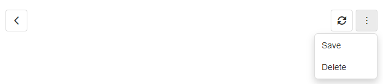
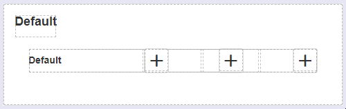
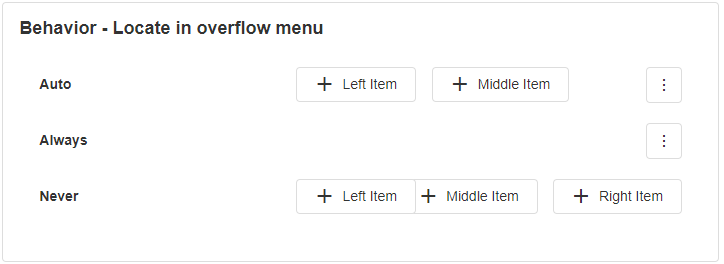

Toolbar
The Toolbar is a UI component that can contain items that are used to manage screen content. Those items can be plain text or other blocks such as images and are useful for showing options to the user in a more visual form than a regular menu.

Toolbar Properties
Appearance
Common Properties
Toolbars have properties that are common to most Blocks: visibility and tooltip.
See the Common Properties article for more details on common appearance properties.
Behavior
Common Properties
The disabled property is common to most Blocks;
See the Common Properties article for more details on common behavior properties.
Toolbar Item Properties
Adding Toolbar Items
The Toolbar Block has 3 areas, before, center, and after. Adding new items can be done in two ways. The first one is to add it by clicking the plus sign when you have either the toolbar or tollbar item selected. This is will create a new item with default settings.

If you have the toolbar selected and add a new item it will be added to the before section which is the first one from the left. If you have the toolbar item selected and click the plus sign, the new item will be added to the same section as the selected item.
Items can be moved by dragging and dropping them to the desired section.
You can also add items by clicking the copy button when one of the items is selected. This will create a new item with the exact same settings as the selected item.
Appearance
Common Properties
You can change the visibility, styling, add a tooltip and change the icon.
See the Common Properties article for more details on common appearance properties.
Text
Tooltip items can have text next to the icon.

Behavior
Common Properties
The disabled property is common to most Blocks;
See the Common Properties article for more details on common behavior properties.
Locate in overflow menu
Auto - It will try to fit items as long as they are fully visible.
Always - It will hide the item even if there is enough space to show it.
Never - It will show the items at all times. Some items may overlap.\

Validation
Common Properties
The groups to validate property is common to most Blocks;
See the Common Properties article for more details on common validation properties.
Action
Common Properties
The toolbar has properties that are common to most Blocks: navigate to and show confirmation dialog;
See the Common Properties article for more details on common action properties.
Last modified: May 24, 2025